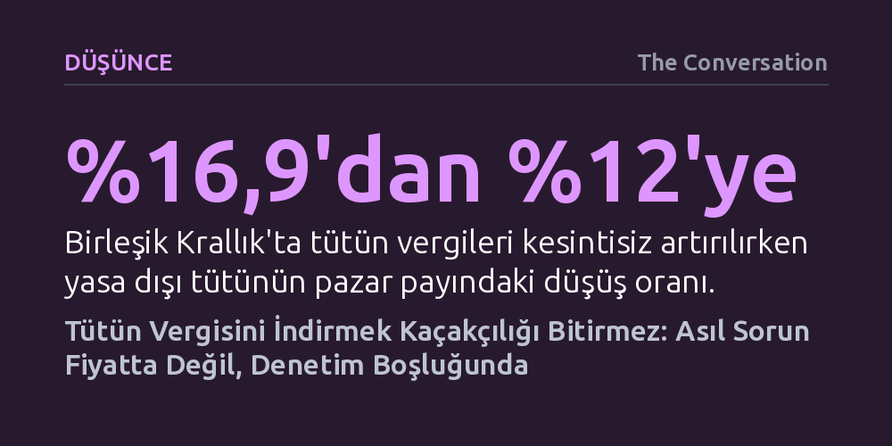

DUSUNCE · The Conversation · 2026-09-07
Kaçak tütün pazarını büyüten asıl etken yüksek vergiler değil, tedarik zincirindeki denetim ve takip eksikliğidir. Vergi indirimi organize suç ağlarını ortadan kaldırmadığı gibi tüketimi körükleyerek halk sağlığı kazanımlarını yok eder.
Kaçakçılığın tek sebebinin yüksek vergiler olduğu yanılgısını yıkarak, yasa dışı ticaretle mücadelenin fiyat kırmaktan değil tedarik zincirini sıkı denetlemekten geçtiğini gösterir.

Avustralya’da muhalefetteki Koalisyon, tütün ürünlerine uygulanan federal özel tüketim vergisini yüzde 80 oranında düşürmeyi önerdi. Savunulan tez ilk bakışta cazip ve basit görünüyor: Yasal sigaralar ucuzlarsa tüketiciler karaborsadan uzaklaşacak ve organize suç örgütleri en büyük kâr kapısından mahrum kalacak. Ne var ki bu öneri kulağa mantıklı gelse de temelden kusurlu bir varsayıma dayanıyor. Yüksek vergilerin vergisiz satışları son derece kârlı kıldığı yadsınamaz bir gerçek; ancak bu kâr marjı tek başına yasa dışı ticaretin doğuş sebebi değildir.
Resmi veriler, Avustralya'da toplam nikotin tüketiminin 2017 ile 2025 yılları arasında yaklaşık yüzde 40 oranında arttığını gösteriyor. Bu sıçramanın arkasında yasal sigara fiyatlarının üç katına çıkması ve piyasayı kaçak sigara ile kayıtsız e-sigaraların istila etmesi yatıyor. Ancak tablonun işaret ettiği asıl kriz basit bir fiyat farkı değil, doğrudan bir vergi idaresi ve denetim iflasıdır. Tedarik zincirini baştan sona izleyemeyen ve kurallara uyumu denetleyemeyen bir idari yapı sürdüğü müddetçe, yasa dışı pazarlar zemin bulmaya devam eder.
Uluslararası veriler, yüksek tütün vergilerinin kaçınılmaz olarak kaçakçılık doğurmadığını net biçimde kanıtlıyor. Dünya Bankası’nın 2019 tarihli kapsamlı incelemesi, yasa dışı ticaretle mücadelede asıl belirleyici unsurun vergi oranları değil, vergilerin nasıl denetlendiği ve tahsil edildiği olduğunu ortaya koydu. Örneğin Birleşik Krallık, tütün vergilerini aralıksız artırırken yasa dışı tütünün pazar payını yüzde 16,9 seviyesinden yüzde 12'ye düşürmeyi başardı. İngiltere’de sigara dalı başına alınan vergi yaklaşık 47 peni (yaklaşık 88 Avustralya senti) iken, Avustralya'da bu oran 1,55 Avustralya dolarını buluyor; fakat İngiltere'deki başarının sırrı vergi oranında değil, kurulan denetim sisteminde saklı.
Birleşik Krallık bu düşüşü, tütün ürünlerini fabrikadan son kullanıcıya kadar takip eden 'izle ve takip et' altyapısına ve paketler üzerindeki gizli güvenlik işaretlerine borçlu. Bu işaretler sayesinde yetkililer bir ürünün vergisinin ödenip ödenmediğini sahada anında doğrulayabiliyor. Ayrıca vergi dairesi, gümrük ve sınır muhafaza güçleri arasındaki bütçe artırılarak kurumların ortak hareket etmesi sağlandı.
Buna karşılık 1994 yılında kaçakçılığı önlemek amacıyla tütün vergisini düşüren Kanada örneği, halk sağlığı açısından yıkıcı sonuçlar doğurdu. Ucuzlayan sigaralar yüzünden gençler kitlesel olarak sigaraya başladı ve uygulanan bu politika nedeniyle 30 bin ila 40 bin insanın erken yaşta hayatını kaybettiği hesaplandı. Dahası, tütün şirketlerinin ürünleri bizzat kaçak kanallara yönlendirdiği ve eşzamanlı olarak 'kaçakçılığı bitirelim' söylemiyle vergi indirimini savundukları anlaşıldı. Elde edilen düşüş de son derece kısa ömürlü oldu; 2000'li yıllara gelindiğinde kaçakçılık oranları yeniden yükselişe geçti.
Yasa dışı tütün pazarlarının büyümesi, idari güvenlik kalkanlarının yokluğundan kaynaklanır. Başarılı ülkelerin uyguladığı sistemlerin ortak özellikleri bellidir: Tütüne temas eden her işletme lisanslanır ve izlenir; ürünün vergisinin ödendiğini gösteren resmi güvenlik mühürleri kullanılır; tedarik zincirinde eksiksiz bir kayıt tutma zorunluluğu getirilir ve kurumlar hem kendi aralarında hem de uluslararası düzeyde istihbarat paylaşır.
Avustralya ise dünyanın en yüksek tütün vergilerini yürürlüğe koyarken bu vazgeçilmez idari kontrol altyapısını kurmayı ihmal etti. Ülkede tütün ürünlerinin dolaşımını izleyen ulusal bir takip sistemi mevcut değil; verginin ödendiğini doğrulayan ne fiziki ne de dijital bir mali mühür bulunuyor. Mevzuat federal hükümet ile eyaletler arasında bölünmüş durumda, lisanslama şartları tutarsız ve denetim birimleri yetersiz kaynaklarla çalışıyor. Caydırıcı cezalar ve kolluk yetkileri ancak yakalanma ve yargılanma ihtimali yüksek olduğunda işe yarar; denetim mekanizması bulunmadığında cezaları artırmak tek başına çözüm üretmez.
Vergileri düşürerek yasal sigaraları ucuzlatmak organize suçu ortadan kaldırmaz. Çünkü suç şebekelerinin kurduğu sınır ötesi tedarik hatları, gizli lojistik kanalları ve dağıtım ağları hızla yeni şartlara uyum sağlayacak esnekliğe sahiptir. Üstelik sigarayı ucuzlatmak, Dünya Sağlık Örgütü ve Dünya Bankası tarafından tütün tüketimini ve buna bağlı hastalıkları azaltmada en etkili araç olarak kabul edilen yüksek vergi politikasını çökertecektir.
Avustralya’nın çözümü vergi indiriminde değil, kaçak pazarının ürünlerini ve tedarik rotalarını haritalandıran ulusal bir eylem planında araması gerekir. Mücadele yalnızca limanlarda ve sınırda konteyner yakalamakla sınırlı kalamaz; ürünler ülkeye ulaşmadan önce kaynak ve transit ülkelerle yürütülecek diplomatik temaslar, gümrük ortaklıkları ve istihbarat paylaşımı şarttır. Üstelik Avustralya'da benzer kontrol açıklarının yasa dışı alkol piyasasında da belirmeye başlaması, meselenin vergi oranından değil yapısal denetim zaafından kaynaklandığını açıkça ortaya koymaktadır.